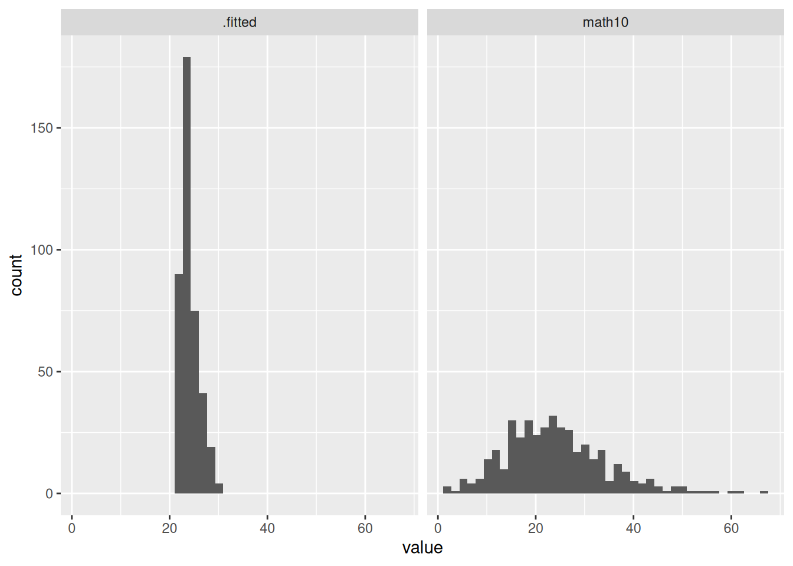
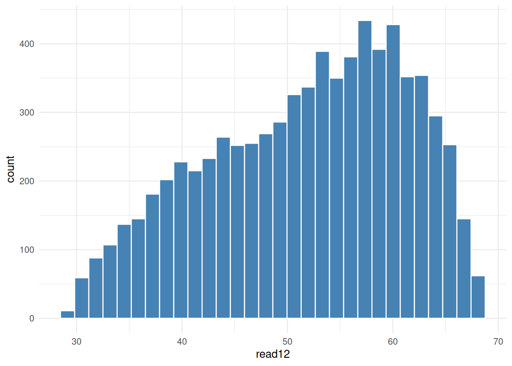

library(tidyverse)
library(wooldridge)
library(knitr)
library(modelsummary)
library(broom)2 The Simple Regression Model
2.1 C1 [401K]
The data in 401K are a subset of data analyzed by Papke (1995) to study the relationship between participation in a 401(k) pension plan and the generosity of the plan. The variable
prateis the percentage of eligible workers with an active account; this is the variable we would like to explain. The measure of generosity is the plan match rate,mrate. This variable gives the average amount the firm contributes to each worker’s plan for each $1 contribution by the worker. For example, ifmrate= 0 50. , then a $1 contribution by the worker is matched by a 50¢ contribution by the firm.
c1 <- k401k
kable(head(c1))| prate | mrate | totpart | totelg | age | totemp | sole | ltotemp |
|---|---|---|---|---|---|---|---|
| 26.1 | 0.21 | 1653 | 6322 | 8 | 8709 | 0 | 9.072112 |
| 100.0 | 1.42 | 262 | 262 | 6 | 315 | 1 | 5.752573 |
| 97.6 | 0.91 | 166 | 170 | 10 | 275 | 1 | 5.616771 |
| 100.0 | 0.42 | 257 | 257 | 7 | 500 | 0 | 6.214608 |
| 82.5 | 0.53 | 591 | 716 | 28 | 933 | 1 | 6.838405 |
| 100.0 | 1.82 | 92 | 92 | 7 | 143 | 1 | 4.962845 |
- Find the average participation rate and the average match rate in the sample of plans.
c1 |>
summarise(
Avg_Part_Rt = mean(prate),
Avg_Match_Rt = mean(mrate)
) |>
round(2) Avg_Part_Rt Avg_Match_Rt
1 87.36 0.73Interpretation:
On average, 87.36% of eligible employees participate in their company’s 401(k) plan. Their company matches $0.73 for every dollar an employee contributes.
estimate the simple regression equation \[\widehat{prate} = \hat \beta_0 + \hat \beta_1 mrate\] and report the results along with the sample size and R-squared.
c1m <- lm(prate ~ mrate, data = c1)
modelsummary(
c1m,
fmt = 2,
statistic = NULL,
gof_map = c("nobs", "r.squared"),
coef_rename = c("mrate" = "Match Rate ($)", "(Intercept)" = "Constant")
)| (1) | |
|---|---|
| Constant | 83.08 |
| Match Rate ($) | 5.86 |
| Num.Obs. | 1534 |
| R2 | 0.075 |
Interpretation:
\[ \begin{align} \beta_0 &= 83.03 & \beta_1 &= 5.86 \\ R^2 &= 0.075 & n &= 1534 \end{align} \]
- Interpret the intercept in your equation. Interpret the coefficient on
mrate.
Interpretation:
If the match rate is 0, predicted participation rate is 83.08%. For ever $1 increase in match rate, participation is associated by an increase of 5.86 percentage points.
- Find the predicted prate when
mrate= 3.5. Is this a reasonable prediction? Explain what is happening here.
new_data <- data.frame(mrate = 3.5)
c1m |>
predict(newdata = new_data) |>
round(2) 1
103.59
NoteLevel-Level model prediction
To predict \(\hat y\) value given a new value of x in a level-level model, substitute in this formula
\[\hat y = \hat \beta_0 + \hat \beta_1 x\]
Interpretation:
Model predicts a participation rate of 103.59 which exceeds the maximum possible value of 100.
- How much of the variation in
prateis explained bymrate? Is this a lot in your opinion?
Interpretation:
Match rate explains only about 7.5% of the variation in participation rate, while the remaining 92.5% are due to other factors.
2.2 C2 [CEOSAL2]
The data set in CEOSAL2 contains information on chief executive officers for U.S. corporations. The variable
salaryis annual compensation, in thousands of dollars, andceotenis prior number of years as company CEO.
c2 <- ceosal2
kable(head(c2))| salary | age | college | grad | comten | ceoten | sales | profits | mktval | lsalary | lsales | lmktval | comtensq | ceotensq | profmarg |
|---|---|---|---|---|---|---|---|---|---|---|---|---|---|---|
| 1161 | 49 | 1 | 1 | 9 | 2 | 6200 | 966 | 23200 | 7.057037 | 8.732305 | 10.051908 | 81 | 4 | 15.580646 |
| 600 | 43 | 1 | 1 | 10 | 10 | 283 | 48 | 1100 | 6.396930 | 5.645447 | 7.003066 | 100 | 100 | 16.961130 |
| 379 | 51 | 1 | 1 | 9 | 3 | 169 | 40 | 1100 | 5.937536 | 5.129899 | 7.003066 | 81 | 9 | 23.668638 |
| 651 | 55 | 1 | 0 | 22 | 22 | 1100 | -54 | 1000 | 6.478509 | 7.003066 | 6.907755 | 484 | 484 | -4.909091 |
| 497 | 44 | 1 | 1 | 8 | 6 | 351 | 28 | 387 | 6.208590 | 5.860786 | 5.958425 | 64 | 36 | 7.977208 |
| 1067 | 64 | 1 | 1 | 7 | 7 | 19000 | 614 | 3900 | 6.972606 | 9.852194 | 8.268732 | 49 | 49 | 3.231579 |
- Find the average salary and the average tenure in the sample.
c2 |>
summarise(
Avg_Salary = mean(salary),
Avg_Tenure = mean(ceoten)
) |>
round(2) Avg_Salary Avg_Tenure
1 865.86 7.95Interpretation:
Average salary is $865,860 with an average tenure of 7.95 years.
- How many CEOs are in their first year as CEO (that is,
ceoten= 0)? What is the longest tenure as a CEO?
c2 |>
summarise(
Fresh_CEO = sum(ceoten == 0),
Veteran = max(ceoten)
) Fresh_CEO Veteran
1 5 37Interpretation:
There are 5 CEOs in their first year, and the longest serving CEO has been in charge for 37 years.
- Estimate the regression model \[ \log(salary) = \beta_0 + \beta_1 ceoten + u\] and report your results in the usual form. What is the (approximate) predicted percentage increase in salary given one more year as a CEO?
c2m <- lm(lsalary ~ ceoten, data = c2)
modelsummary(
c2m,
fmt = 2,
statistic = NULL,
gof_map = c("nobs", "r.squared"),
coef_rename = c("ceoten" = "Tenure", "(Intercept)" = "Constant")
)| (1) | |
|---|---|
| Constant | 6.51 |
| Tenure | 0.01 |
| Num.Obs. | 177 |
| R2 | 0.013 |
Interpretation:
For every 1 additional year of tenure as CEO, salary is predicted to increase by 1%. This shows that salary increases due to other factors not loyalty.
2.3 C3 [SLEEP75]
Use the data in SLEEP75 from Biddle and Hamermesh (1990) to study whether there is a tradeoff between the time spent sleeping per week and the time spent in paid work. We could use either variable as the dependent variable. For concreteness, estimate the model \[sleep = \beta_0 + \beta_1 totwrk + u\] where
sleepis minutes spent sleeping at night per week andtotwrkis total minutes worked during the week.
c3 <- sleep75
kable(head(c3))| age | black | case | clerical | construc | educ | earns74 | gdhlth | inlf | leis1 | leis2 | leis3 | smsa | lhrwage | lothinc | male | marr | prot | rlxall | selfe | sleep | slpnaps | south | spsepay | spwrk75 | totwrk | union | worknrm | workscnd | exper | yngkid | yrsmarr | hrwage | agesq |
|---|---|---|---|---|---|---|---|---|---|---|---|---|---|---|---|---|---|---|---|---|---|---|---|---|---|---|---|---|---|---|---|---|---|
| 32 | 0 | 1 | 0 | 0 | 12 | 0 | 0 | 1 | 3529 | 3479 | 3479 | 0 | 1.955861 | 10.075380 | 1 | 1 | 1 | 3163 | 0 | 3113 | 3163 | 0 | 0 | 0 | 3438 | 0 | 3438 | 0 | 14 | 0 | 13 | 7.070004 | 1024 |
| 31 | 0 | 2 | 0 | 0 | 14 | 9500 | 1 | 1 | 2140 | 2140 | 2140 | 0 | 0.357674 | 0.000000 | 1 | 0 | 1 | 2920 | 1 | 2920 | 2920 | 1 | 0 | 0 | 5020 | 0 | 5020 | 0 | 11 | 0 | 0 | 1.429999 | 961 |
| 44 | 0 | 3 | 0 | 0 | 17 | 42500 | 1 | 1 | 4595 | 4505 | 4227 | 1 | 3.021887 | 0.000000 | 1 | 1 | 0 | 3038 | 1 | 2670 | 2760 | 0 | 20000 | 1 | 2815 | 0 | 2815 | 0 | 21 | 0 | 0 | 20.529997 | 1936 |
| 30 | 0 | 4 | 0 | 0 | 12 | 42500 | 1 | 1 | 3211 | 3211 | 3211 | 0 | 2.263844 | 0.000000 | 0 | 1 | 1 | 3083 | 1 | 3083 | 3083 | 0 | 5000 | 1 | 3786 | 0 | 3786 | 0 | 12 | 0 | 12 | 9.619998 | 900 |
| 64 | 0 | 5 | 0 | 0 | 14 | 2500 | 1 | 1 | 4052 | 4007 | 4007 | 0 | 1.011601 | 9.328213 | 1 | 1 | 1 | 3493 | 0 | 3448 | 3493 | 0 | 2400 | 1 | 2580 | 0 | 2580 | 0 | 44 | 0 | 33 | 2.750000 | 4096 |
| 41 | 0 | 6 | 0 | 0 | 12 | 0 | 1 | 1 | 4812 | 4797 | 4797 | 0 | 2.957511 | 10.657280 | 1 | 1 | 1 | 4078 | 0 | 4063 | 4078 | 0 | 0 | 0 | 1205 | 0 | 0 | 1205 | 23 | 0 | 23 | 19.249998 | 1681 |
- Report your results in equation form along with the number of observations and \(R^2\). What does the intercept in this equation mean?
c3m <- lm(sleep ~ totwrk, data = c3)
modelsummary(
c3m,
fmt = 2,
statistic = NULL,
gof_map = c("nobs", "r.squared"),
coef_rename = c(
"(Intercept)" = "Constant",
"totwrk" = "Minutes Worked per Week"
)
)| (1) | |
|---|---|
| Constant | 3586.38 |
| Minutes Worked per Week | -0.15 |
| Num.Obs. | 706 |
| R2 | 0.103 |
Interpretation:
A jobless person is predicted to sleep 3586 minutes per week [8.54 hours of daily sleep].
For every 100 minutes worked, 15 minutes of sleep are lost.
- If
totwrkincreases by 2 hours, by how much issleepestimated to fall? Do you find this to be a large effect?
sleep_fall <- coef(c3m)["totwrk"] * 120
cat("Estimated change in sleep:", round(sleep_fall, 2), "minutes")Estimated change in sleep: -18.09 minutes| Model | Regression Equation | Interpretation of \(\hat \beta_1\) | Name |
|---|---|---|---|
| Level-Level | \(y = \hat \beta_0 + \hat \beta_1 x\) | \(\Delta \hat y = \hat \beta \Delta x\) | Marginal Effect |
| Log-Level | \(\log(y) = \hat \beta_0 + \hat \beta_1 x\) | \(\% \Delta \hat y \approx (100\hat \beta_1) \Delta x\) | Semi-elasticity |
| Level-Log | \(y = \hat \beta_0 + \hat \beta_1 \log(x)\) | \(\Delta \hat y \approx (\hat \beta_1)/100 \% \Delta x\) | - |
| Log-Log | \(\log(y) = \hat \beta_0 + \hat \beta_1 \log(x)\) | \(\% \Delta \hat y \approx \hat \beta_1 \% \Delta x\) | Elasticity |
Interpretation:
Working an extra two hours per week will reduce weekly sleep by 18 minutes [2.6 minutes per night]. This is practically insignificant.
2.4 C4 [WAGE2]
Use the data in WAGE2 to estimate a simple regression explaining monthly salary (
wage) in terms of IQ score (IQ).
c4 <- wage2
kable(head(c4))| wage | hours | IQ | KWW | educ | exper | tenure | age | married | black | south | urban | sibs | brthord | meduc | feduc | lwage |
|---|---|---|---|---|---|---|---|---|---|---|---|---|---|---|---|---|
| 769 | 40 | 93 | 35 | 12 | 11 | 2 | 31 | 1 | 0 | 0 | 1 | 1 | 2 | 8 | 8 | 6.645091 |
| 808 | 50 | 119 | 41 | 18 | 11 | 16 | 37 | 1 | 0 | 0 | 1 | 1 | NA | 14 | 14 | 6.694562 |
| 825 | 40 | 108 | 46 | 14 | 11 | 9 | 33 | 1 | 0 | 0 | 1 | 1 | 2 | 14 | 14 | 6.715383 |
| 650 | 40 | 96 | 32 | 12 | 13 | 7 | 32 | 1 | 0 | 0 | 1 | 4 | 3 | 12 | 12 | 6.476973 |
| 562 | 40 | 74 | 27 | 11 | 14 | 5 | 34 | 1 | 0 | 0 | 1 | 10 | 6 | 6 | 11 | 6.331502 |
| 1400 | 40 | 116 | 43 | 16 | 14 | 2 | 35 | 1 | 1 | 0 | 1 | 1 | 2 | 8 | NA | 7.244227 |
- Find the average salary and average IQ in the sample. What is the sample standard deviation of IQ? (IQ scores are standardized so that the average in the population is 100 with a standard deviation equal to 15).
c4 |>
summarise(
Avg_Salary = mean(wage),
Avg_IQ = mean(IQ),
SD_IQ = sd(IQ)
) |>
round(2) Avg_Salary Avg_IQ SD_IQ
1 957.95 101.28 15.05Interpretation:
The sample average wage (\(\overline{wage}\)) is 957.95, with an average IQ (\(\overline{IQ}\)) of 101.28. The sample standard deviation for IQ \(\hat \sigma_{IQ}\) is 15.05
- Estimate a simple regression model where a one-point increase in
IQchangeswageby a constant dollar amount. Use this model to find the predicted increase inwagefor an increase inIQof 15 points. DoesIQexplain most of the variation inwage?
c4m <- lm(wage ~ IQ, data = c4)
modelsummary(
c4m,
fmt = 2,
statistic = NULL,
gof_map = c("nobs", "r.squared"),
coef_rename = c(
"(Intercept)" = "Constant"
)
)| (1) | |
|---|---|
| Constant | 116.99 |
| IQ | 8.30 |
| Num.Obs. | 935 |
| R2 | 0.096 |
IQ_inc <- coef(c4m)["IQ"] * 15
cat("Estimated change in wage:", round(IQ_inc, 2), "dollars")Estimated change in wage: 124.55 dollarsInterpretation:
An increase in IQ by 15 is associated with an in increase in predicted wage by $124.55. IQ explains only 9.6% of the variation in wage ; the remaining variation is unexplained by the model.
- Now, estimate a model where each one-point increase in
IQhas the same percentage effect onwage. IfIQincreases by 15 points, what is the approximate percentage increase in predictedwage?
c4m2 <- lm(lwage ~ IQ, data = c4)
modelsummary(
c4m2,
fmt = 3,
statistic = NULL,
gof_map = c("nobs", "r.squared"),
coef_rename = c(
"(Intercept)" = "Constant"
)
)| (1) | |
|---|---|
| Constant | 5.887 |
| IQ | 0.009 |
| Num.Obs. | 935 |
| R2 | 0.099 |
IQ_inc <- coef(c4m2)["IQ"] * 15 * 100
cat("Estimated change in wage:", round(IQ_inc, 2), "percent")Estimated change in wage: 13.21 percentInterpretation:
Each point increase is associated with an increase in wage by 0.9%; 15 point increase in IQ will have a predicted wage increase by approximately 13% percent.
2.5 C5 [RDCHEM]
For the population of firms in the chemical industry, let
rddenote annual expenditures on research and development, and letsalesdenote annual sales (both are in millions of dollars).
c5 <- rdchem
kable(head(c5))| rd | sales | profits | rdintens | profmarg | salessq | lsales | lrd |
|---|---|---|---|---|---|---|---|
| 430.6 | 4570.2 | 186.9 | 9.421907 | 4.089536 | 20886730.00 | 8.427312 | 6.0651798 |
| 59.0 | 2830.0 | 467.0 | 2.084806 | 16.501766 | 8008900.00 | 7.948032 | 4.0775375 |
| 23.5 | 596.8 | 107.4 | 3.937668 | 17.995979 | 356170.22 | 6.391582 | 3.1570003 |
| 3.5 | 133.6 | -4.3 | 2.619760 | -3.218563 | 17848.96 | 4.894850 | 1.2527629 |
| 1.7 | 42.0 | 8.0 | 4.047619 | 19.047619 | 1764.00 | 3.737670 | 0.5306283 |
| 8.4 | 390.0 | 47.3 | 2.153846 | 12.128205 | 152100.00 | 5.966147 | 2.1282318 |
- Write down a model (not an estimated equation) that implies a constant elasticity between
rdandsales. Which parameter is the elasticity?
\[\log(rd) = \beta_0 + \beta_1 \log(sales) + u\]
Interpretation:
The parameter \(\beta_1\) represents elasticity
- Now, estimate the model using the data in RDCHEM. Write out the estimated equation in the usual form. What is the estimated elasticity of
rdwith respect tosales? Explain in words what this elasticity means.
c5m <- lm(lrd ~ lsales, data = c5)
modelsummary(
c5m,
fmt = 2,
statistic = NULL,
gof_map = c("nobs", "r.squared"),
coef_rename = c(
"(Intercept)" = "Constant",
"lsales" = "Log Sales"
)
)| (1) | |
|---|---|
| Constant | -4.10 |
| Log Sales | 1.08 |
| Num.Obs. | 32 |
| R2 | 0.910 |
Interpretation:
A 1% change in sales is associated with a 1.08% change in expenditures.
2.6 C6 [MEAP93]
We used the data in MEAP93 for Example 2.12. In this exercise, we want to explore the relationship between the math pass rate (
math10) and spending per student (expend).
c6 <- meap93
kable(head(meap93))| lnchprg | enroll | staff | expend | salary | benefits | droprate | gradrate | math10 | sci11 | totcomp | ltotcomp | lexpend | lenroll | lstaff | bensal | lsalary |
|---|---|---|---|---|---|---|---|---|---|---|---|---|---|---|---|---|
| 1.4 | 1862 | 112.6 | 5765 | 37498 | 7420 | 2.9 | 89.2 | 56.4 | 67.9 | 44918 | 10.71259 | 8.659560 | 7.529407 | 4.723842 | 0.1978772 | 10.53204 |
| 2.3 | 11355 | 101.2 | 6601 | 48722 | 10370 | 1.3 | 91.4 | 42.7 | 65.3 | 59092 | 10.98685 | 8.794976 | 9.337414 | 4.617099 | 0.2128402 | 10.79389 |
| 2.7 | 7685 | 114.0 | 6834 | 44541 | 7313 | 3.5 | 91.4 | 43.8 | 54.3 | 51854 | 10.85619 | 8.829665 | 8.947025 | 4.736198 | 0.1641858 | 10.70417 |
| 3.4 | 1148 | 85.4 | 3586 | 31566 | 5989 | 3.6 | 86.6 | 25.3 | 60.0 | 37555 | 10.53356 | 8.184793 | 7.045776 | 4.447346 | 0.1897295 | 10.35984 |
| 3.4 | 1572 | 96.1 | 3847 | 29781 | 5545 | 0.0 | 100.0 | 15.3 | 65.8 | 35326 | 10.47237 | 8.255049 | 7.360104 | 4.565389 | 0.1861925 | 10.30163 |
| 3.4 | 2496 | 101.1 | 5070 | 36801 | 5895 | 2.7 | 89.2 | 46.0 | 60.5 | 42696 | 10.66186 | 8.531097 | 7.822445 | 4.616110 | 0.1601859 | 10.51328 |
- Do you think each additional dollar spent has the same effect on the pass rate, or does a diminishing effect seem more appropriate? Explain.
Interpretation:
I believe dollar has a diminishing effect on passing rate. Most students with limited source can pass, but scoring maximum mark takes very high resources. Also a constant effect may predict students can pass the maximum score.
- In the population model \[math10 = \beta_0 + \beta_1 \log(expend) + u\] argue that \(β_1 / 10\) is approximately the percentage point change in
math10given a 10% increase inexpend.
Interpretation:
\[ \begin{align} \Delta math10 &= \beta_1 \cdot \Delta \log(expend) \\ \Delta math10 &\approx \beta_1 \cdot \left( \frac{\Delta expend}{expend} \right) \\ \Delta math10 &\approx \beta_1 \cdot (0.10) \\ \Delta math10 &\approx \frac{\beta_1}{10} \end{align} \]
- Use the data in MEAP93 to estimate the model from part (ii). Report the estimated equation in the usual way, including the sample size and R-squared.
c6m <- lm(math10 ~ lexpend, data = c6)
modelsummary(
c6m,
fmt = 2,
statistic = NULL,
gof_map = c("nobs", "r.squared"),
coef_rename = c(
"(Intercept)" = "Constant",
"lexpend" = "Student Spending"
)
)| (1) | |
|---|---|
| Constant | -69.34 |
| Student Spending | 11.16 |
| Num.Obs. | 408 |
| R2 | 0.030 |
- How big is the estimated spending effect? Namely, if spending increases by 10%, what is the estimated percentage point increase in
math10?
Interpretation:
Estimated effect for spending effect is 11.16. If spending increases by 10%, math pass rate increase by 1.116 percentage points.
- One might worry that regression analysis can produce fitted values for
math10that are greater than 100. Why is this not much of a worry in this data set?
c6m |>
augment() |>
select(math10, .fitted) |>
pivot_longer(everything()) |>
ggplot(aes(x = value)) +
geom_histogram(bins = 40) +
facet_wrap(~name)
Interpretation:
We don’t have to worry about passing maximum rate because predicted rates are between the interval [20, 30] while original rates had maximum rate below 80.
2.7 C7 [CHARITY]
Use the data in CHARITY [obtained from Franses and Paap (2001)] to answer the following questions:
c7 <- charity
kable(head(c7))| respond | gift | resplast | weekslast | propresp | mailsyear | giftlast | avggift |
|---|---|---|---|---|---|---|---|
| 0 | 0 | 0 | 143.00000 | 0.3 | 2.5 | 10 | 10 |
| 0 | 0 | 0 | 65.42857 | 0.3 | 2.5 | 10 | 10 |
| 0 | 0 | 1 | 13.14286 | 0.3 | 2.5 | 10 | 10 |
| 0 | 0 | 0 | 120.14286 | 0.3 | 2.5 | 10 | 10 |
| 1 | 10 | 0 | 103.85714 | 0.2 | 2.5 | 10 | 10 |
| 0 | 0 | 0 | 129.14285 | 0.3 | 2.5 | 10 | 10 |
- What is the average gift in the sample of 4,268 people (in Dutch guilders)? What percentage of people gave no gift?
c7 |>
summarise(
Avg_Gift = mean(gift),
No_Gift_Pct = mean(gift == 0) * 100
) |>
round(2) Avg_Gift No_Gift_Pct
1 7.44 60Interpretation:
Average gift in the sample is 7.44 with 60% of the sample having no gifts.
- What is the average mailings per year? What are the minimum and maximum values?
c7 |>
summarise(
Min_Mailing = min(mailsyear),
Avg_Mailing = mean(mailsyear),
Max_Mailing = max(mailsyear)
) |>
round(2) Min_Mailing Avg_Mailing Max_Mailing
1 0.25 2.05 3.5Interpretation:
Minimum number of mailings per year is 0.25. The average is 2.05 and maximum is 3.05.
- Estimate the model \[gift = \beta_0 + \beta_1 mailsyear + u\] by OLS and report the results in the usual way, including the sample size and R-squared.
c7m <- lm(gift ~ mailsyear, data = c7)
modelsummary(
c7m,
fmt = 2,
statistic = NULL,
gof_map = c("nobs", "r.squared"),
coef_rename = c(
"(Intercept)" = "Constant",
"mailsyear" = "Mailings per Year"
)
)| (1) | |
|---|---|
| Constant | 2.01 |
| Mailings per Year | 2.65 |
| Num.Obs. | 4268 |
| R2 | 0.014 |
- Interpret the slope coefficient. If each mailing costs one guilder, is the charity expected to make a net gain on each mailing? Does this mean the charity makes a net gain on every mailing? Explain.
Interpretation:
For each extra mailing per year, gift is predicted to increase by 2.65. If each mailing costs 1 guilder, net gain on each mail is 2.65 - 1 = 1.65. This does not mean that charity makes a net gain on every mailing, it means that, on average, net gain will be 1.65.
- What is the smallest predicted charitable contribution in the sample? Using this simple regression analysis, can you ever predict zero for
gift?
c7m |>
augment() |>
summarise(
Min_Prediction = min(.fitted)
) |>
round(2)# A tibble: 1 × 1
Min_Prediction
<dbl>
1 2.68Interpretation:
Minimum predicted gift is 2.68 coming from the observation with 0.25 mailings per year (\(2.01 + 2.65(0.25) = 2.68\)). Predicting a zero is impossible with this model because \(\hat \beta_0\) and \(\hat \beta_1\) are both greater than zero; least possible value is\(\hat \beta_0 = 2.01\).
2.8 C8 [Simulation]
- Start by generating 500 observations on \(x_i\)—the explanatory variable—from the uniform distribution with range [0,10]. (Most statistical packages have a command for the Uniform(0,1) distribution; just multiply those observations by 10.) What are the sample mean and sample standard deviation of the \(x_i\)?
set.seed(42)
x_i <- runif(500, min = 0, max = 10)
cat(round(mean(x_i), 2), round(sd(x_i), 2))4.9 2.93Interpretation:
The sample mean of \(x_i\) is 4.9 and the sample standard deviation is 2.89. These values are close to, but not exactly equal to, the theoretical population mean (\(E[x] = 5\)) and population standard deviation (\(\sigma_x \approx 2.93\)) of a Uniform(0,10) distribution due to finite sampling variance.
- Randomly generate 500 errors, \(u_i\), from the Normal(0,36) distribution. (If you generate a Normal(0,1), as is commonly available, simply multiply the outcomes by six.) Is the sample average of the \(u_i\) exactly zero? Why or why not? What is the sample standard deviation of the \(u_i\)?
set.seed(42)
u_i <- rnorm(500, mean = 0, sd = 6)
cat(round(mean(u_i), 2), round(sd(u_i), 2))-0.18 5.83Interpretation:
The sample average of \(u_i\) is -0.18, which is not exactly zero. While the population expectation is exactly zero (\(E[u] = 0\)), a finite sample of 500 random draws will inherently contain sampling error, preventing the sample mean from perfectly matching the population mean. The sample standard deviation is 5.83, which closely approximates the population standard deviation of 6.
- Now generate \(y_i\) as \[y_i = 1+2x_i + u_i \equiv \beta_0 + \beta_1 + u_i\] that is, the population intercept is one and the population slope is two. Use the data to run the regression of \(y_i\) on \(x_i\). What are your estimates of the intercept and slope? Are they equal to the population values in the above equation? Explain.
y_i <- 1 + (2 * x_i) + u_i
c8m <- lm(y_i ~ x_i)
modelsummary(
c8m,
statistic = NULL,
gof_map = list(),
coef_rename = c(
"(Intercept)" = "Constant",
"x_i" = "x"
)
)| (1) | |
|---|---|
| Constant | 0.901 |
| x | 1.983 |
Interpretation:
\(\hat \beta_0\)is estimated to be 0.901 and \(\hat \beta_1\) is estimated to be 1.983. They differ from the true population parameters (\(\beta_0 = 1, \beta_1 = 2\)) due to sampling error. The intercept deviates because the sample mean of the errors (\(\bar u\)) is not exactly zero. More importantly, the slope deviates because the sample covariance between \(x_i\) and \(u_i\) is not exactly zero.
- Obtain the OLS residuals, \(u_i\), and verify that equation (2.60) holds (subject to rounding error).
c8m |>
augment() |>
summarise(
Sum_Resid = sum(.resid),
Sum_x_resid = sum(x_i * .resid)
) |>
round(2)# A tibble: 1 × 2
Sum_Resid Sum_x_resid
<dbl> <dbl>
1 0 0Interpretation:
The sum of the residuals (\(\sum \hat{u}_i\)) and the sum of the product of the regressors and residuals (\(\sum x_i \hat{u}_i\)) are both effectively zero. This confirms that the algebraic properties of OLS hold perfectly in the sample.
- Compute the same quantities in equation (2.60) but use the errors \(u_i\) in place of the residuals. Now what do you conclude?
c8m |>
augment() |>
summarise(
Sum_Error = sum(u_i),
Sum_x_Error = sum(x_i * u_i)
) |>
round(2)# A tibble: 1 × 2
Sum_Error Sum_x_Error
<dbl> <dbl>
1 -90.1 -512.Interpretation:
When using the unobserved population errors (\(u_i\)) instead of the OLS residuals (\(\hat u_i\)), the sums are far from zero (\(\sum u_i = -90.14\) and \(\sum x_i u_i = -512.34\)). This highlights the fundamental mechanical difference between errors and residuals: OLS residuals are mathematically forced by the regression algorithm to sum to zero and be uncorrelated with , whereas population errors are unobserved random variables that will not perfectly satisfy these orthogonal conditions in a finite sample.
- Repeat parts (i), (ii), and (iii) with a new sample of data, starting with generating the \(x_i\).Now what do you obtain for \(\hat \beta_0, \hat \beta_1\)? Why are these different from what you obtained in part (iii)?
set.seed(43)
x_i <- runif(500, min = 0, max = 10)
u_i <- rnorm(500, mean = 0, sd = 6)
y_i <- 1 + (2 * x_i) + u_i
c8m2 <- lm(y_i ~ x_i)
modelsummary(
c8m2,
statistic = NULL,
gof_map = list(),
coef_rename = c(
"(Intercept)" = "Constant",
"x_i" = "x"
)
)| (1) | |
|---|---|
| Constant | 1.022 |
| x | 2.040 |
Interpretation:
With a new random sample, the estimates change to \(\hat{\beta}_0 = 1.022\) and \(\hat{\beta}_1 = 2.040\). These differ from the estimates in part (iii) because every new sample draws a unique set of \(x_i\) and \(u_i\) values. Consequently, the new sample mean of and the new sample covariance between and have changed. The OLS estimator processes this new random sample variation, resulting in different deviations from the true population parameters.
CautionWhen estimate equals parameter
Formula for the slope \(\hat \beta_1\): \[\hat \beta_1 = \beta_1 + \dfrac{Cov(x,u)}{Var(x)}\] To be equal to the parameter, covariance must be = zero
Formula for \(\hat \beta_0\):
\[\hat \beta_0 = \beta_0 + (\beta_1 - \hat \beta_1) \bar x + \bar u\] To be equal to the parameter, average of error term must be exactly zero, and \(\hat \beta_1 = \beta_1\)
2.9 C9 [COUNTYMURDERS]
Use the data in COUNTYMURDERS to answer these questions. Use only the data for 1996.
c9 <- countymurders |>
filter(year == 1996)
kable(head(c9))| arrests | countyid | density | popul | perc1019 | perc2029 | percblack | percmale | rpcincmaint | rpcpersinc | rpcunemins | year | murders | murdrate | arrestrate | statefips | countyfips | execs | lpopul | execrate |
|---|---|---|---|---|---|---|---|---|---|---|---|---|---|---|---|---|---|---|---|
| 8 | 1001 | 67.21535 | 40061 | 15.89077 | 13.17491 | 20.975510 | 48.70073 | 192.038 | 11852.760 | 26.796 | 1996 | 7 | 1.7473350 | 1.9969550 | 1 | 1 | 0 | 10.598160 | 0 |
| 6 | 1003 | 77.05643 | 123023 | 13.93886 | 11.63929 | 13.496660 | 48.83233 | 139.084 | 13583.020 | 28.710 | 1996 | 6 | 0.4877137 | 0.4877137 | 1 | 3 | 0 | 11.720130 | 0 |
| 1 | 1005 | 29.91548 | 26475 | 15.06327 | 13.69972 | 46.190750 | 49.15203 | 405.768 | 10760.510 | 63.162 | 1996 | 1 | 0.3777148 | 0.3777148 | 1 | 5 | 0 | 10.183960 | 0 |
| 0 | 1009 | 67.20457 | 43392 | 14.17542 | 12.99318 | 1.415007 | 48.97446 | 184.382 | 11094.820 | 21.692 | 1996 | 2 | 0.4609145 | 0.0000000 | 1 | 9 | 0 | 10.678030 | 0 |
| 1 | 1011 | 17.89899 | 11188 | 14.98927 | 14.13121 | 72.756520 | 49.91956 | 485.518 | 8349.506 | 63.162 | 1996 | 0 | 0.0000000 | 0.8938148 | 1 | 11 | 0 | 9.322598 | 0 |
| 2 | 1013 | 27.71148 | 21530 | 15.68509 | 11.25871 | 41.384110 | 46.81839 | 357.918 | 9947.058 | 54.868 | 1996 | 2 | 0.9289364 | 0.9289364 | 1 | 13 | 0 | 9.977202 | 0 |
- How many counties had zero murders in 1996? How many counties had at least one execution? What is the largest number of executions?
c9 |>
summarise(
Zero_murders = sum(murders == 0),
Execution = sum(execs > 0)
) Zero_murders Execution
1 1051 31Interpretation:
In 1996, 1051 counties had zero murders. 31 counties had executions.
- Estimate the equation \[murders = \beta_0 + \beta_1 execs + u\] by OLS and report the results in the usual way, including sample size and R-squared.
c9m <- lm(murders ~ execs, data = c9)
modelsummary(
c9m,
fmt = 2,
statistic = NULL,
gof_map = c("nobs", "r.squared"),
coef_rename = c(
"(Intercept)" = "Constant",
"execs" = "Execution"
)
)| (1) | |
|---|---|
| Constant | 5.46 |
| Execution | 58.56 |
| Num.Obs. | 2197 |
| R2 | 0.044 |
- Interpret the slope coefficient reported in part (ii). Does the estimated equation suggest a deterrent effect of capital punishment?
For every one additional execution in a county, the model predicts an increase of approximately 59 murders. No, slope should be negative to have a deterrent effect.
- What is the smallest number of murders that can be predicted by the equation? What is the residual for a county with zero executions and zero murders?
df <- data.frame(execs = 0)
min_pred <- round(predict(c9m, newdata = df), 2)
residual <- round(0 - min_pred, 2)
cat(min_pred, residual)5.46 -5.46Interpretation:
Minimum murders prediction possible from the model is \(\beta_0 = 5.46\). If county has zero murders and zero executions, the residual is \(\hat u = 0 - 5.46 = -5.46\).
- Explain why a simple regression analysis is not well suited for determining whether capital punishment has a deterrent effect on murders.
Interpretation:
To capture causal effect, zero conditional mean assumption must be satisfied. Execution is likely to be correlated with other omitted variables in the error term like police strength. We can also have reverse causal effect in which number of murders causes the number of executions.
2.10 C10 [CATHOLIC]
The data set in CATHOLIC includes test score information on over 7,000 students in the United States who were in eighth grade in 1988. The variables
math12andread12are scores on twelfth grade standardized math and reading tests, respectively.
c10 <- catholic
kable(head(c10))| id | read12 | math12 | female | asian | hispan | black | motheduc | fatheduc | lfaminc | hsgrad | cathhs | parcath |
|---|---|---|---|---|---|---|---|---|---|---|---|---|
| 124902 | 61.41 | 49.77 | 0 | 0 | 0 | 0 | 14 | 12 | 10.30895 | 1 | 0 | 1 |
| 124915 | 58.34 | 59.84 | 0 | 0 | 0 | 0 | 14 | 14 | 10.30895 | 1 | 0 | 1 |
| 124916 | 59.33 | 50.38 | 1 | 0 | 0 | 0 | 14 | 11 | 10.30895 | 1 | 0 | 1 |
| 124932 | 49.59 | 45.03 | 1 | 0 | 0 | 0 | 12 | 14 | 10.30895 | 1 | 0 | 1 |
| 124944 | 57.62 | 54.26 | 1 | 0 | 0 | 0 | 12 | 12 | 10.65726 | 1 | 0 | 1 |
| 124947 | 52.53 | 56.73 | 1 | 0 | 0 | 0 | 12 | 11 | 11.04292 | 1 | 0 | 1 |
- How many students are in the sample? Find the means and standard deviations of
math12andread12.
c10 |>
summarise(
Count = n(),
Mean_Math = mean(math12),
Sd_Math = sd(math12),
Mean_Read = mean(read12),
Sd_Read = sd(read12)
) |>
round(2) Count Mean_Math Sd_Math Mean_Read Sd_Read
1 7430 52.13 9.46 51.77 9.41Interpretation:
There are 7430 students in the sample. Math score averaged 52.13 with standard deviation of 9.46. Reading score averaged 51.77 with standard deviation of 9.41.
- Run the simple regression of
math12onread12to obtain the OLS intercept and slope estimates. Report the results.
c10m <- lm(math12 ~ read12, data = c10)
modelsummary(
c10m,
fmt = 2,
statistic = NULL,
gof_map = c("nobs", "r.squared"),
coef_rename = c(
"(Intercept)" = "Constant",
"read12" = "Reading Score"
)
)| (1) | |
|---|---|
| Constant | 15.15 |
| Reading Score | 0.71 |
| Num.Obs. | 7430 |
| R2 | 0.505 |
- Does the intercept reported in part (ii) have a meaningful interpretation? Explain.
ggplot(c10, aes(x = read12)) +
geom_histogram(bins = 30, fill = "steelblue", color = "white") +
theme_minimal()
Interpretation:
The intercept of 15.15 represents predicted math score for a student with a zero reading score. The sample has no such students (extrapolation). Intercept is included to satisfy the first order conditions.
- Are you surprised by the \(\hat \beta_1\) that you found? What about \(R^2\)?
Interpretation:
Standardized tests for math and reading both measure general cognitive ability and test taking skills, so a high \(\hat \beta_1\) is expected. \(R^2\) is high for cross sectional observational data.
- Suppose that you present your findings to a superintendent of a school district, and the superintendent says, “Your findings show that to improve math scores we just need to improve reading scores, so we should hire more reading tutors.” How would you respond to this comment? (Hint: If you instead run the regression of read12 on math12, what would you expect to find?)
c10m2 <- lm(read12 ~ math12, data = c10)
modelsummary(
c10m2,
fmt = 2,
statistic = NULL,
gof_map = c("nobs", "r.squared"),
coef_rename = c(
"(Intercept)" = "Constant",
"math12" = "Math Score"
)
)| (1) | |
|---|---|
| Constant | 14.94 |
| Math Score | 0.71 |
| Num.Obs. | 7430 |
| R2 | 0.505 |
Interpretation:
Running regression in reverse resulted in almost identical \(R^2, \hat \beta_1\). Both variables are correlated and move together. This may indicate presence of a confounding variable like school quality.
NoteCorrelation VS Causaliy.
Remember that OLS slope can be written as
\[ \hat \beta_1 = \rho_{xy}\cdot \dfrac{\sigma_y}{\sigma_x} \]
So it is measuring correlation at the end of the day, except if zero conditional mean assumption is really met.
2.11 C11 [GPA1]
Use the data in GPA1 to answer these questions. It is a sample of Michigan State University undergraduates from the mid-1990s, and includes current college GPA,
colGPA, and a binary variable indicating whether the student owned a personal computerPC.
c11 <- gpa1
kable(head(c11))| age | soph | junior | senior | senior5 | male | campus | business | engineer | colGPA | hsGPA | ACT | job19 | job20 | drive | bike | walk | voluntr | PC | greek | car | siblings | bgfriend | clubs | skipped | alcohol | gradMI | fathcoll | mothcoll |
|---|---|---|---|---|---|---|---|---|---|---|---|---|---|---|---|---|---|---|---|---|---|---|---|---|---|---|---|---|
| 21 | 0 | 0 | 1 | 0 | 0 | 0 | 1 | 0 | 3.0 | 3.0 | 21 | 0 | 1 | 1 | 0 | 0 | 0 | 0 | 0 | 1 | 1 | 0 | 0 | 2 | 1.0 | 1 | 0 | 0 |
| 21 | 0 | 0 | 1 | 0 | 0 | 0 | 1 | 0 | 3.4 | 3.2 | 24 | 0 | 1 | 1 | 0 | 0 | 0 | 0 | 0 | 1 | 0 | 1 | 1 | 0 | 1.0 | 1 | 1 | 1 |
| 20 | 0 | 1 | 0 | 0 | 0 | 0 | 1 | 0 | 3.0 | 3.6 | 26 | 1 | 0 | 0 | 0 | 1 | 0 | 0 | 0 | 1 | 1 | 0 | 1 | 0 | 1.0 | 1 | 1 | 1 |
| 19 | 1 | 0 | 0 | 0 | 1 | 1 | 1 | 0 | 3.5 | 3.5 | 27 | 1 | 0 | 0 | 0 | 1 | 0 | 0 | 0 | 0 | 1 | 0 | 0 | 0 | 0.0 | 0 | 0 | 0 |
| 20 | 0 | 1 | 0 | 0 | 0 | 0 | 1 | 0 | 3.6 | 3.9 | 28 | 0 | 1 | 0 | 1 | 0 | 0 | 0 | 0 | 1 | 1 | 1 | 0 | 0 | 1.5 | 1 | 1 | 0 |
| 20 | 0 | 0 | 1 | 0 | 1 | 1 | 1 | 0 | 3.0 | 3.4 | 25 | 0 | 0 | 0 | 0 | 1 | 0 | 0 | 0 | 1 | 1 | 0 | 0 | 0 | 0.0 | 0 | 1 | 0 |
- How many students are in the sample? Find the average and highest college GPAs.
c11 |>
summarise(
Count = n(),
Avg_GPA = mean(colGPA),
Max_GPA = max(colGPA)
) |>
round(2) Count Avg_GPA Max_GPA
1 141 3.06 4Interpretation:
There are 141 students in the sample, with an average GPA of 3.06. Maximum GPA is 4.
- How many students owned their own PC?
c11 |>
summarise(
Has_PC = sum(PC)
) Has_PC
1 56Interpretation:
56 students have personal computer in the sample.
- Estimate the simple regression equation \[colGPA = \beta_0 + PC + u\] Interpret these estimates, including a discussion of the magnitudes.
c11m <- lm(colGPA ~ PC, data = c11)
modelsummary(
c11m,
fmt = 2,
statistic = NULL,
gof_map = c("nobs", "r.squared"),
coef_rename = c(
"(Intercept)" = "Constant",
"PC" = "Own PC"
)
)| (1) | |
|---|---|
| Constant | 2.99 |
| Own PC | 0.17 |
| Num.Obs. | 141 |
| R2 | 0.050 |
Interpretation:
A student with no PC is expected to get a GPA of 2.99. Owning PC is associated with an increase of GPA by 0.17 to be a total of 3.16.
- What is the R-squared from the regression? What do you make of its magnitude?
\(R^2 = 5\%\); 5% of the variation in GPA is explained by owning a PC.
- Does your finding in part (iii) imply that owning a PC has a causal effect on colGPA? Explain.
Interpretation:
No, PC is associated with many other omitted variables found in the error term like wealth.
2.12 C12 [LOANAPP]
Use the data in LOANAPP to answer these questions. See also Computer Exercise C9 in Chapter 1. The variable
approveis a binary variable set to one if an applicant’s mortgage application was approved and zero if not. The variablewhiteis equal to one if the applicant is classified as being White and zero if not.
c12 <- loanapp
kable(head(c12))| occ | loanamt | action | msa | suffolk | appinc | typur | unit | married | dep | emp | yjob | self | atotinc | cototinc | hexp | price | other | liq | rep | gdlin | lines | mortg | cons | pubrec | hrat | obrat | fixadj | term | apr | prop | inss | inson | gift | cosign | unver | review | netw | unem | min30 | bd | mi | old | vr | sch | black | hispan | male | reject | approve | mortno | mortperf | mortlat1 | mortlat2 | chist | multi | loanprc | thick | white |
|---|---|---|---|---|---|---|---|---|---|---|---|---|---|---|---|---|---|---|---|---|---|---|---|---|---|---|---|---|---|---|---|---|---|---|---|---|---|---|---|---|---|---|---|---|---|---|---|---|---|---|---|---|---|---|---|---|---|---|
| 1 | 89 | 1 | 1120 | 0 | 72 | 0 | 1 | 0 | 0 | 0 | 0 | 0 | 5849 | 0 | 1031 | 118 | 0 | 34.5 | 1 | 1 | 15 | 2 | 1 | 0 | 17.63 | 34.5 | 0 | 360 | 118 | 1 | 0 | 0 | 0 | 0 | 0 | 1 | 99.6 | 3.2 | 0 | 0 | 1 | 0 | 1 | 1 | 0 | 0 | NA | 0 | 1 | 0 | 1 | 0 | 0 | 1 | 0 | 0.7542373 | 0 | 1 |
| 1 | 128 | 3 | 1120 | 0 | 74 | 0 | 1 | 1 | 1 | 0 | 0 | 0 | 4583 | 1508 | 1391 | 160 | 0 | 52.0 | 3 | 1 | 19 | 2 | 2 | 0 | 22.54 | 34.1 | 1 | 360 | 175 | 2 | 0 | 0 | 0 | 0 | 0 | 999 | 847.0 | 3.2 | 0 | 0 | 1 | 0 | 1 | 1 | 0 | 0 | 1 | 1 | 0 | 0 | 1 | 0 | 0 | 1 | 0 | 0.8000000 | 1 | 1 |
| 1 | 128 | 1 | 1120 | 0 | 84 | 3 | 1 | 0 | 0 | 1 | 1 | 0 | 2666 | 4416 | 1371 | 143 | 0 | 37.0 | 6 | 1 | 18 | 2 | 2 | 0 | 19.00 | 26.0 | 0 | 180 | 145 | 2 | 0 | 0 | 0 | 0 | 0 | 3 | 40.0 | 3.9 | 0 | 1 | 1 | 0 | 0 | 1 | 0 | 0 | 1 | 0 | 1 | 0 | 1 | 0 | 0 | 1 | 0 | 0.8951049 | 1 | 1 |
| 1 | 66 | 1 | 1120 | 0 | 36 | 0 | 1 | 1 | 0 | 0 | 0 | 1 | 3000 | 0 | 839 | 110 | 0 | 19.0 | 1 | 1 | 25 | 2 | 6 | 1 | 24.00 | 37.0 | 0 | 360 | 110 | 2 | 0 | 0 | 1 | 0 | 0 | 2 | 158.0 | 3.1 | 0 | 0 | 1 | 1 | 1 | 1 | 0 | 0 | 1 | 0 | 1 | 0 | 1 | 0 | 0 | 0 | 0 | 0.6000000 | 0 | 1 |
| 1 | 120 | 1 | 1120 | 0 | 59 | 8 | 1 | 1 | 0 | 0 | 0 | 0 | 2583 | 2358 | 1341 | 134 | 0 | 31.0 | 1 | 1 | 15 | 2 | 1 | 0 | 25.10 | 32.1 | 0 | 360 | 135 | 1 | 1 | 0 | 0 | 0 | 0 | 2 | 69.0 | 4.3 | 0 | 1 | 1 | 0 | 0 | 0 | 0 | 0 | 1 | 0 | 1 | 0 | 1 | 0 | 0 | 1 | 0 | 0.8955224 | 0 | 1 |
| 1 | 111 | 1 | 1120 | 0 | 63 | 9 | 1 | 0 | 0 | 0 | 0 | 0 | 2208 | 2959 | 1122 | 138 | 0 | 169.0 | 2 | 1 | 10 | 2 | 6 | 0 | 21.00 | 33.0 | 0 | 360 | 144 | 2 | 0 | 0 | 0 | 0 | 0 | 1 | 262.0 | 3.2 | 0 | 1 | 1 | 0 | 0 | 0 | 0 | 0 | 1 | 0 | 1 | 0 | 1 | 0 | 0 | 0 | 0 | 0.8043478 | 0 | 1 |
- How many mortgage applications are represented in the sample? What percentage of the applicants are classified as being White? Find the approval rates separately for
white = 0andwhite = 1.
c12 |>
summarise(
Total_Applications = n(),
Percent_White = mean(white) * 100
) |>
round(2) Total_Applications Percent_White
1 1989 84.51c12 |>
summarise(
Approval_Rate = round(mean(approve), 2),
.by = white
) |>
mutate(Is_White = ifelse(white == 1, "White", "Not White")) |>
select(Is_White, Approval_Rate) Is_White Approval_Rate
1 White 0.91
2 Not White 0.71Interpretation:
The sample has 1989 applicants. 84.5% of those applicants are classified as white. The approval rate for white is 0.91 while non white applicants have an approval raye of 0.71
- Run a simple regression of approve on white and report the results. Note that the OLS method allows
approveandwhiteto both be binary variables.
c12m <- lm(approve ~ white, data = c12)
modelsummary(
c12m,
fmt = 2,
statistic = NULL,
gof_map = c("nobs", "r.squared"),
coef_rename = c(
"(Intercept)" = "Constant",
"white" = "Is_White"
)
)| (1) | |
|---|---|
| Constant | 0.71 |
| Is_White | 0.20 |
| Num.Obs. | 1989 |
| R2 | 0.049 |
- Interpret your estimate \(\hat \beta_0\) in part(ii). How do you interpret \(\hat \beta_1\)? [Hint: See part(i).]
Interpretation:
Probability of getting approved is 0.71. This probability increases by 0.2 to reach 0.9 if applicant is white.
- Describe the variable
loanprc. What are its average, standard deviation, minimum, and maximum values in the sample?
c12 |>
summarise(
LTP_Mean = mean(loanprc),
LTP_Sd = sd(loanprc),
LTP_Max = max(loanprc),
LTP_Min = min(loanprc)
) |>
round(2) LTP_Mean LTP_Sd LTP_Max LTP_Min
1 0.77 0.19 2.57 0.02Interpretation:
The variable loanprc is loan-to-price ratio \(\text{loanprc} = \dfrac{\text{loanamt}}{\text{price}}\). Mean is 0.77 with standard deviation of 0.19. Minimum loan to price ratio is 0.02 and reaches a maximum of 2.57.
- Estimate a simple regression of
loanprconwhiteand interpret the results.
c12m2 <- lm(loanprc ~ white, data = c12)
modelsummary(
c12m2,
fmt = 2,
statistic = NULL,
gof_map = c("nobs", "r.squared"),
coef_rename = c(
"(Intercept)" = "Constant",
"white" = "Is_White"
)
)| (1) | |
|---|---|
| Constant | 0.84 |
| Is_White | -0.09 |
| Num.Obs. | 1989 |
| R2 | 0.028 |
Interpretation:
The loan to price ratio is predicted to be 0.84. The ratio decreases by 0.09 if the applicant is white to be 0.75.
- Does it make sense to think of
loanprcas a variable that can affect the chance that a loan is approved? Explain.
Interpretation:
Yes, loanprcp and whiteare correlated. Omitting loanprcp will result in an omitted variable bias.